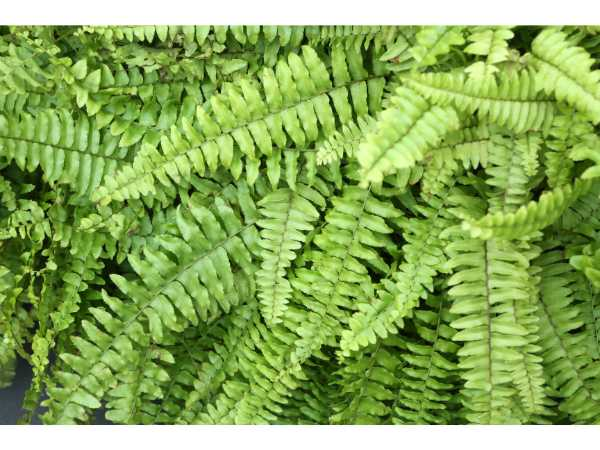

Nephrolepis exaltata
Common Names: Boston Fern, Sword Fern, Ladder Fern
Local Name: Fern (Tamil/Hindi)
Family: Nephrolepidaceae
Origin: Tropical regions of the Americas, Africa, and Polynesia
Plant Type: Evergreen perennial fern
Average Lifespan: Many years with proper care
| Growth Habit | Clump-forming with arching, drooping fronds; spreads via stolons |
| Plant Size | 40–90 cm tall; fronds can reach 1.5 meters in ideal conditions |
| Leaves | Pinnate fronds with many small, bright green leaflets (pinnae); arching and graceful |
| Root System | Fibrous, shallow; spreads via horizontal stolons producing new plantlets |
| Climate | Tropical to subtropical; prefers high humidity |
| Temperature Range | 15–26°C; avoid temperatures below 10°C |
| Rainfall Requirement | High humidity (50–80%); regular misting beneficial |
| Soil Type | Rich, moist, well-draining potting mix with peat or coco coir |
| Soil pH Preference | 5.0–6.5; slightly acidic |
| Sun Requirement | Bright indirect light; no direct sun; tolerates low light |
| Irrigation Method | Keep soil consistently moist; never let it dry out completely |
| Water Requirement | High; consistent moisture and humidity essential |
| Can it Grow in Pots? | Yes, ideal in hanging baskets or pots; repot when rootbound |
| Fertilizer Schedule | Monthly during growing season with diluted balanced liquid fertilizer |
| Recommended Organic Fertilizers | Diluted worm castings, fish emulsion, compost tea |
| Common Pests | Scale insects, mealybugs, spider mites, fungus gnats |
| Common Diseases | Root rot (overwatering), leaf blight, gray mold |
| Disease Prevention & Remedies | Good air circulation, avoid waterlogging, remove dead fronds regularly |
| Pruning Time | Year-round; remove dead or brown fronds as needed |
| How to Prune | Cut dead fronds at base; divide overcrowded clumps in spring |
| Propagation by Cuttings | Division of clumps or separation of stolon plantlets; most reliable method |
| Propagation by Seeds | Propagated by spores; slow and rarely used in home cultivation |
| Water Usage | Moderate to high; benefits from humidity trays or misting |
| Biodiversity Benefits | Excellent air purifier; removes formaldehyde and xylene from indoor air |
| Commercial Production Regions | Widely produced in tropical nurseries globally; major houseplant crop |
| Market Uses | Indoor ornamental, hanging basket plant, office and home decoration |
| Market Value (Approx.) | ₹100–400 per plant in Indian nurseries |
| Symbolism | Symbol of sincerity and shelter; one of the most popular houseplants worldwide |
| Traditional Uses | Used in traditional medicine in some cultures for fever and skin conditions; widely used as air-purifying indoor plant |
Add your field observations here.